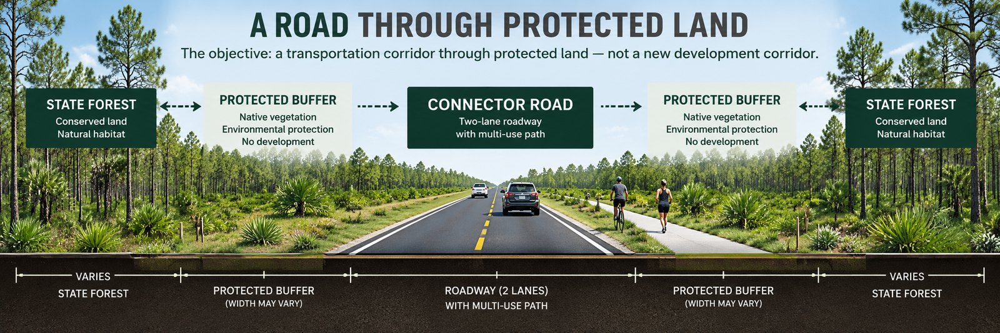

LOCK 1 — PROTECT THE LAND
Recorded conservation restrictions/easements along the forest corridor designed to prohibit future commercial and residential development.
Point Washington State Forest
Can South Walton improve transportation while permanently protecting the forest from future development?
The proposed D2 corridor would pass through Point Washington State Forest. Environmental impacts have been one of the principal concerns surrounding the project, particularly regarding the path through these protected natural lands and the long-term integrity of the forest ecosystem.

Previous public comments raised concerns about: impacts to wetlands and natural ecosystems; wildlife and habitat fragmentation; impacts to Point Washington State Forest; impacts to prescribed burning and forest management; and the possibility of secondary or induced development along a new roadway. The County's 2023 material itself identified potential ecosystem impacts, controlled-burn concerns, and induced development as issues requiring solutions.
“Designing the roadway as a limited-access facility could prevent opportunities for development adjacent to the connector.”
Walton County's 2023 project materials specifically stated that designing the roadway as a limited-access facility could prevent opportunities for development adjacent to the connector. The County stated it was committed to preserving existing conservation areas by restricting future development alongside the proposed roadway.
The concept explores allowing the transportation connection while creating legally enforceable protections designed to keep the forest from becoming a future commercial or residential development corridor. This is a proposed protection concept from community materials, not an adopted policy.
Recorded conservation restrictions/easements along the forest corridor designed to prohibit future commercial and residential development.
Make the forest segment controlled/limited access, with no commercial entrances, residential driveways, subdivision entrances or new private connecting streets.
The objective: a transportation corridor through protected land—not a new development corridor.
Land-use policies and zoning can change over time, which is why one proposal is to explore recorded property protections and roadway-access restrictions in addition to current conservation ownership. This is a proposed protection strategy, not something currently adopted.